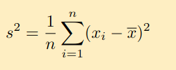
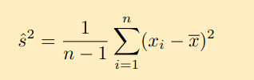

Matematyka (laboratorium, semester 2)
Prowadzący: dr Paulina Grzegorek
-
Wariancja
Jak obliczyć ręcznie?
Jak obliczyć w GNU/Octave?
Liczba zero, użyta jako drugi argument funkcji var, oznacza żądanie obliczenia zwykłej, niepoprawionej wariancji.liczby = [1 2 3 4 819 291 10942 -100] wariancja = var(liczby, 0)Dodatkowa informacja
PS. Większość internetu nazywa tę wartość "wariancją populacji". Pod taką nazwą można ją znaleźć na przykład w programie Excel. Doktor Grzegorek zdaje się nie używać tego określenia. -
Wariancja poprawiona
Jak obliczyć ręcznie?
Jak obliczyć w GNU/Octave?
Liczba 1, użyta jako drugi argument funkcji var, oznacza żądanie obliczenia wariancji poprawionej.liczby = [1 2 3 4 819 291 10942 -100] wariancja = var(liczby, 1)Dodatkowa informacja
PS. Większość internetu nazywa tę wartość "wariancją próbki". Notatki od doktor Grzegorek używają określenia "wariancja poprawiona", zatem takiej wartości będę używał w niniejszym opracowaniu.
-
Odchylenie standardowe
Jak obliczyć ręcznie?
jest to pierwiastek z wariancji (wzór jest powyżej)Jak obliczyć w GNU/Octave?
Liczba zero, użyta jako drugi argument funkcji std, oznacza żądanie obliczenia zwykłego, niepoprawionego odchylenia standardowego.liczby = [1 2 3 4 819 291 10942 -100] wariancja = std(liczby, 0)Dodatkowa informacja
PS. Większość internetu nazywa tę wartość "odchyleniem standardowym populacji". Pod taką nazwą można ją znaleźć na przykład w programie Excel. Doktor Grzegorek zdaje się nie używać tego określenia. -
Odchylenie standardowe poprawione
Jak obliczyć ręcznie?
jest to pierwiastek z odchylenia standardowego poprawionego (wzór jest powyżej)Jak obliczyć w GNU/Octave?
Liczba 1, użyta jako drugi argument funkcji std, oznacza żądanie obliczenia odchylenia standardowego poprawionego.liczby = [1 2 3 4 819 291 10942 -100] wariancja = std(liczby, 1)Dodatkowa informacja
PS. Większość internetu nazywa tę wartość "wariancją próbki". Notatki od doktor Grzegorek używają określenia "wariancja poprawiona", zatem takiej wartości będę używał w niniejszym opracowaniu.
Wartości krytyczne to lewy i prawy koniec dystrybuanty danego prawdopodobieństwa. Aby je obliczyć, należy znać trzy parametry:
- Poziom ufności (na przykład 90% albo 95%)
- Żądany rozkład (na przykład rozkład normalny, rozkład chi-kwadrat, rozkład t-studenta)
- Jeżeli żądany rozkład to rozkład chi-kwadrat albo t-studenta, należy oprócz tego znać liczbę stopni swobody (są one podane w treści zadania)
Jak obliczać wartości krytyczne dla rozkładu normalnego
# Pod tę zmienną należy podstawić wartość z zadania
poziom_ufnosci = 0.95;
lewa = (1 - poziom_ufnosci) / 2;
prawa = 1 - lewa;
format long;
disp(norminv(lewa));
disp(norminv(prawa));
Jak obliczać wartości krytyczne dla rozkładu chi-kwadrat o określonej ilości stopniach swobody
# Pod te dwie zmienne należy podstawić wartości z zadania
poziom_ufnosci = 0.95;
stopnie_swobody = 99;
lewa = (1 - poziom_ufnosci) / 2;
prawa = 1 - lewa;
format long;
disp(chi2inv(lewa, stopnie_swobody));
disp(chi2inv(prawa, stopnie_swobody));
Jak obliczać wartości krytyczne dla rozkładu t-studenta o określonej ilości stopniach swobody
# Pod te dwie zmienne należy podstawić wartości z zadania
poziom_ufnosci = 0.95;
stopnie_swobody = 99;
lewa = (1 - poziom_ufnosci) / 2;
prawa = 1 - lewa;
format long;
disp(tinv(lewa, stopnie_swobody));
disp(tinv(prawa, stopnie_swobody));
Licząc przedział ufności dla wariancji albo średniej, należy mieć świadomość z jakim rodzajem próby pracujemy.
- Próba mała (do 100 pomiarów)
- Próba duża (100 pomiarów i powyżej)
Ma to znaczenie, ponieważ średnią i wariancję liczymy innymi wzorami dla próby małej i próby dużej. Jeśli próba jest duża, to średnią i wariancję wyznacza rozkład normalny. Jeśli próba jest mała,s to wariancję wyznacza rozkład chi-kwadrat, natomiast średnią wyznacza rozkład t-studenta.
Powyższa karta wzorów zawiera wzory na:
- Średnią (dla próby małej i dużej)
- Wariancję (dla próby małej i dużej)
- Część populacji (na przykład ile procent patyczaków lubi jodłę, a ile świerk - w tym przypadku nie ma rozgraniczenia na próbę małą i dużą, wszystko wyznaczamy rozkładem normalnym)
Wszystkie powyższe wzory odwołują się do wartości krytycznych różnych rozkładów - więc należy umieć obliczać wartości krytyczne wszystkich 3 rozkładów (tinv, norminv, chi2inv).
Zamiast mean podstawiamy funkcję która ma być obliczona (mean/median/var/std)
proba = [1 2 3 4 5];
poziomUfnosci = 0.95;
rs=100000;
n = length(proba);
reproby = proba(randi(n, rs, n));
srednie = sort(mean(reproby'));
l = round((1 - poziomUfnosci)/2 * rs);
p = round(rs - ((1 - poziomUfnosci)/2 * rs));
p = [srednie(l) srednie(p)];
format long g;
disp(p);